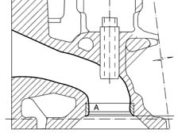
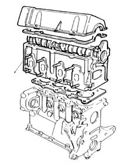

Introduction - CYLINDER HEAD/S
- Path
- Descriptions > 10 ENGINE > 1016 CYLINDER HEAD/S > Introduction - CYLINDER HEAD/S
- Kind
- system description
- Applies to
- all engines; all production periods
- Interactive page
- https://sloeber94.github.io/elrnDB-fPnd/en/#/2753453
Applies to: engines: 1.1, 1.2 8v; all production periods
The cylinder head is the monolithic type made from aluminium alloy. The two valves per cylinder are mounted in their respective guides, operated by a camshaft via mechanical tappets and adjustment shims.
The valve guides are installed by interference fit in their seats in the cylinder head.
The inner diameter is finished off after assembly, using a specific reamer.
The cylinder head gasket is of the Aramide fibre type, and there is no need to retighten the cylinder head at all during the life of the engine.
Applies to: engines: 1.1, 1.2 8v; all production periods
The following elements make up the cylinder head:
camshaft
camshaft bearings
tappets
lubrication pipe
inlet and exhaust valves
valve guides
valve bores
tappet cover
studs for fixing exhaust and intake manifolds
The cylinder head contains: the intake manifolds (with Venturi pipe shaped profile) (1); the exhaust manifolds; the valve openings; the coolant flow openings; the lubricant flow openings; the spark plug threaded openings; the openings for fastening to the engine block and the combustion chambers.

Applies to: engines: 1.1, 1.2 8v; all production periods
The head is the component which closes the cylinder; it contains the combustion chambers, where the air-fuel mixture is compressed and ignited; very high temperatures are reached here (average values 2300 ° C approx). For this reason aluminium alloys are used in the construction of cylinder heads as they are light, resistant to compression and have high termal conductivity properties.
The use of this material makes it possible to increase the compression ratio, moving away from the detonation point, because the heat is dissipated more rapidly away from the hot spots.
